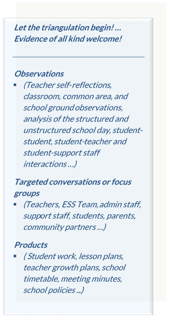

2018-2019 DRAFT
New Brunswick School Improvement Indicators
The Vision
+
New Brunswick school communities, districts, and EECD share a
common understanding of practices leading to school effectiveness
and these are in place in every school.

This document is intended as a formative tool for fostering individual and
collective professional growth. It will continue to evolve as new research
becomes available and as we hear from you. It is a vehicle for introducing
new concepts and initiating dialogue at planning tables, within
professional communities and with school partners.
This document is meant to challenge: to ensure every school is an inclusive environment where the diverse needs of 21st century learners are met.
This document presents a synthesis of current research on school effectiveness. It is meant to be the core of the school improvement process - with your relevant performance data pulled into the discussion constantly.
This document is meant to challenge: to ensure every school is an inclusive environment where the diverse needs of 21st century learners are met.
This document presents a synthesis of current research on school effectiveness. It is meant to be the core of the school improvement process - with your relevant performance data pulled into the discussion constantly.
The 10-year Education Plan
+
The desire for a consistent improvement planning framework for schools was
identified by means of two major consultations. The first was a consultation
which focused on the 10-year Education Plan implementation. The 10-year
Education Plan Implementation Committee, which consisted of early childhood
educators, representatives from the New Brunswick Teachers’ Association,
First Nation educators, families, principals, classroom teachers, and
education system leaders, led consultations with over 4800 participants.
When the team submitted their recommendations, the overarching request from
the system was to establish clear expectations for implementing the 10-year
Education Plan.
The second consultation was system-wide and occurred between November 24th and December 1st, 2017. This took into consideration the views of educators working on the front lines and included 2497 individual and school submissions. Ongoing consultations, including focus groups and individual dialogues have occurred regularly following the larger consultations. From these consultations the desire for a consistent improvement framework to be used provincially throughout the four Anglophone School Districts was identified. Suggestions for content to be included in the Improvement Framework were also gathered from these systemic consultations.
The second consultation was system-wide and occurred between November 24th and December 1st, 2017. This took into consideration the views of educators working on the front lines and included 2497 individual and school submissions. Ongoing consultations, including focus groups and individual dialogues have occurred regularly following the larger consultations. From these consultations the desire for a consistent improvement framework to be used provincially throughout the four Anglophone School Districts was identified. Suggestions for content to be included in the Improvement Framework were also gathered from these systemic consultations.
Organization of This Document
+
The New Brunswick School Improvement Indicators are grouped within
four domains and eleven subdomains.
The domains are ordered hierarchically. The classroom environment operates within the broader learning environment, which operates within the leadership and teaming environment, which operates to carry out the overarching School Improvement Plan (SIP) and Positive Learning and Working Environment Plan (PLWEP) goals and their strategies, and the same logic operates in reverse.
The four domains are one way of grouping related practices to more easily see them as processes within a system. Practices at each level affect/inform those at higher and lower levels, so the degree to which they are intentionally aligned will impact effectiveness.
This does not mean all indicators in Domains I – III must be addressed before tackling Classroom Practice, or that indicators in any domain are more important than others.
I. Systemic School Planning
II. Leadership & Teaming
III. Learning Environments
IV. Classroom Practice
The domains are ordered hierarchically. The classroom environment operates within the broader learning environment, which operates within the leadership and teaming environment, which operates to carry out the overarching School Improvement Plan (SIP) and Positive Learning and Working Environment Plan (PLWEP) goals and their strategies, and the same logic operates in reverse.
The four domains are one way of grouping related practices to more easily see them as processes within a system. Practices at each level affect/inform those at higher and lower levels, so the degree to which they are intentionally aligned will impact effectiveness.
This does not mean all indicators in Domains I – III must be addressed before tackling Classroom Practice, or that indicators in any domain are more important than others.
Using This Document
+
This document has been created as a tool for school self-assessment as part of the development and monitoring of School Improvement and Positive Learning and Working Environment Plans.

Recommended Process for Self-Assessment
Review of the guiding questions at the beginning of each domain, in conjunction with school-based evidence (e.g., Teacher Perception Survey Data, OurSchool and Student Wellness Survey data, meeting minutes, existing SIP and PLWEP monitoring data) will help to identify the domains or subdomains for initial focus.Once the domain or subdomains of interest are identified, school improvement teams are encouraged to review the associated indicators and sub-indicators. An initial discussion of these with reference to the evidence/data already reviewed will help to determine which indicators and sub-indicators warrant deep analysis. Deep analysis is based on triangulation of evidence. This will increase the reliability of the self-assessment.
To assist with interpretation of the indicators, please refer to the NB School Improvement Indicators with Explanatory Notes document. This document provides further explanation of the rationale/practices supporting each indicator and/or the associated research. This will support the effective rating of indicators.
Schools that are developing a new SIP are encouraged to work through all the indicators.
Possible Approaches to the use of the Indicator Document
To be determined by districts and schools:- School self-assessment only
- School self-assessment plus invitation to an external team to visit and evaluate school performance based on the indicators
- School-District Blended Model: schools self-assess and seek support from district personnel who work in collaboration with the school. These individuals are termed school liaisons in the New Brunswick Provincial Improvement Framework: A Collaborative Process for Schools, Districts and the Province. School liaisons can act as a critical friend who provides direct support or can link schools to others (e.g., district personnel, like-sized and configured schools, principal or teacher mentors /supports).
Rating Descriptors
+
When discussing indicator ratings, school teams are urged to be mindful of
the purpose of this document as a vehicle for formative dialogue. The value
of the discussion lies in coming to agreement on the current situation, and
establishing priorities for focused action, not the rating.
The labels for the ratings are: Very Evident (VE), Mostly Evident (ME), Somewhat Evident (SE) and Not Evident (NE).
The following is proposed as a guide for determining ratings. Only Very Evident is defined. This approach was chosen in order to avoid inflexible rubrics while providing sufficient guidance to support uniform rating decisions.
Questions to consider when using a rating of Very Evident:
Note: Indicators are rated by triangulating evidence from a variety of sources including observations, conversations and products.
The labels for the ratings are: Very Evident (VE), Mostly Evident (ME), Somewhat Evident (SE) and Not Evident (NE).
| VE: | You’ve nailed it – keep maintaining the processes and knowledge needed to preserve this practice (embedded and consistent practice) |
| ME: | You have processes and procedures in place and are partway there – don’t slow down |
| SE: | You have a plan and a step or two – decide whether it’s a priority because it will take some dedication to implement |
| NE: | You haven’t considered it because you didn’t think it was important, or don’t know how to begin – you need some help to get started (if it’s a priority) |
The following is proposed as a guide for determining ratings. Only Very Evident is defined. This approach was chosen in order to avoid inflexible rubrics while providing sufficient guidance to support uniform rating decisions.
Very Evident
The evidence indicates that this look-for is consistently demonstrated, well-established, and sustainable (processes, knowledge, skills, data, and ongoing monitoring and adjustment are required for this are in place).
The evidence indicates that this look-for is consistently demonstrated, well-established, and sustainable (processes, knowledge, skills, data, and ongoing monitoring and adjustment are required for this are in place).
Questions to consider when using a rating of Very Evident:
- Is this part of the way we do business (pervasive, routine, part of the school culture)?
- Would this survive if the leadership changed?
- Is there a process for induction of new staff members?
- Is this a school-wide approach?
- Is it consistently demonstrated by staff – or just pockets of staff, or certain groups of staff?
- Is it documented with data/evidence or artifacts?
- Would your staff be able to explain/speak to this practice?
- Are staff members willing to share this practice with others or have others come to your school or class to observe?
Note: Indicators are rated by triangulating evidence from a variety of sources including observations, conversations and products.